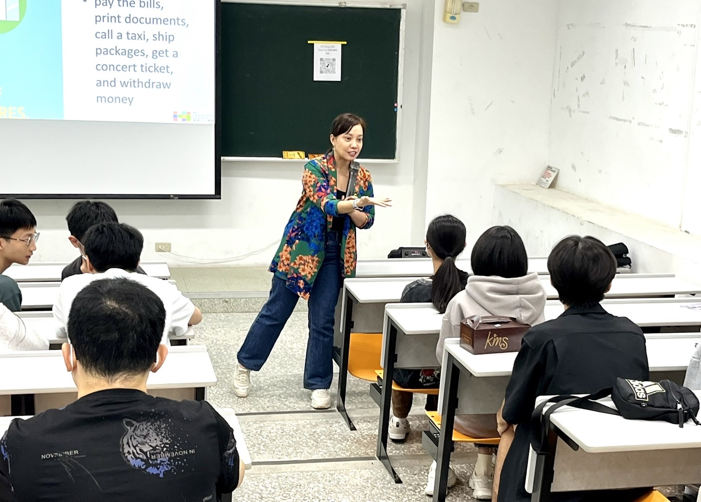
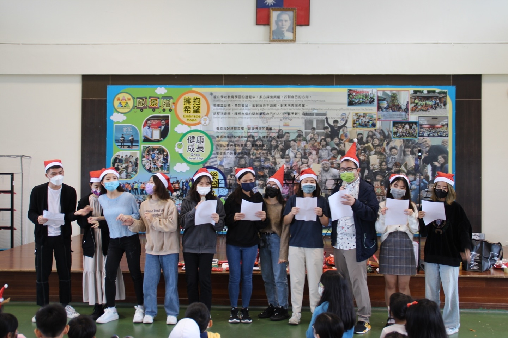
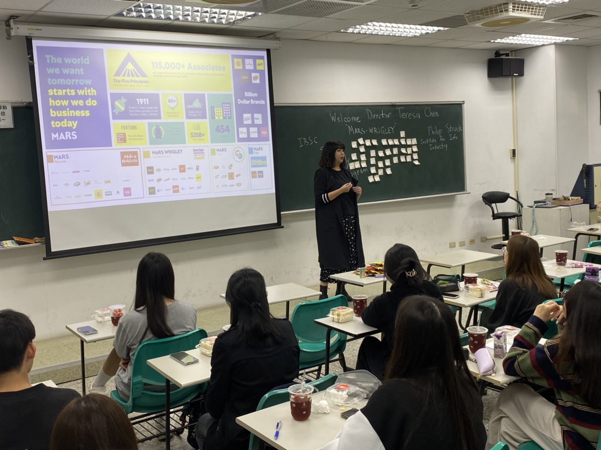
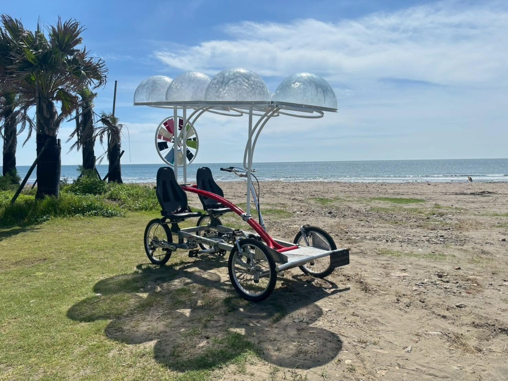

Develop skills in academic writing, English presentation, technical communication and intercultural communication.
IBSC students taking part in a Christmas activity at Bao-Sheng Elementary School.
Browse related coursesBuild a foundation in strategic communication and public relations, then explore the subjects and experiences that connect with your interests.

The curriculum develops critical thinking, practical English writing and presentation, and teamwork across cultures. Foundational study is complemented by design, digital media and AI-related coursework, followed by advanced electives, internships and study abroad opportunities.
Explore how you learnLanguage, creative media, and audience insight come together in strategic communication. Select a theme to explore the coursework.

01 Communicate with clarityFind the words. Share your perspective. Explore this themeDevelop skills in academic writing, English presentation, technical communication and intercultural communication.
IBSC students taking part in a Christmas activity at Bao-Sheng Elementary School.
Browse related coursesExplore art and design, computer graphics, and multimedia content management and creation with AI.
《重生：拾光者》 by 邱杰森 and 莫珊嵐, featured in IBSC’s coverage of the 2026 Taoyuan Land Art Festival.
Browse related courses
03 Understand audiencesConnect communication with people and industry. Explore this themeStudy persuasion, marketing, public relations and the meetings, incentives, conferences and exhibitions industry.
Teresa Chen shares industry experience during IBSC’s 2023 gender equality activity.
Browse related coursesIBSC brings together teaching from across Yuan Ze University’s humanities, social sciences, languages, design, and management departments.
Explore language, interpretation, and the cultural perspectives that shape meaning.
Build practical language skills and communicate effectively across cultures.
Bring ideas to life through visual expression, design, and creative media.
Connect audience insight with marketing, public relations, and organizational communication.

Browse selected courses from the published IBSC curriculum. Availability and requirements should be checked against the course list for your entry year.
13 published course entries
Explore the course map, progression, and advising guidance. Confirm your individual study plan with the program office.
Contact the program officeIBSC connects strategic communication, practical English, design and digital media. Follow the learning pathway and explore selected published courses.
Students learn across social and policy sciences, Chinese language and literature, applied foreign languages, art and design, and business management. English is the shared language of teaching, discussion and presentation.
The program develops problem-solving, multicultural teamwork and the practical use of English. AI and multimedia coursework complements a foundation in public relations and strategic communication.
The first two years establish communication, writing, presentation and digital foundations. In the later years, students build on those foundations through advanced study, electives, internships and opportunities abroad.
IBSC’s published course map is based on the 2025 academic year and covers professional courses. The complete required and elective list is published separately for each entry year; university-wide requirements also apply.
These examples show the range of IBSC study. Availability and requirements should be checked against the course list for your entry year.
Discuss course choices, academic requirements and the timing of an internship or exchange with the program office. Keep a copy of the complete requirements for your entry year when reviewing your progress.
01Social & Policy Sciences
Understand communities, institutions, and the social contexts in which communication takes place.